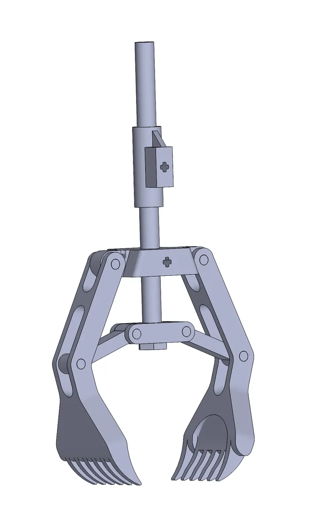
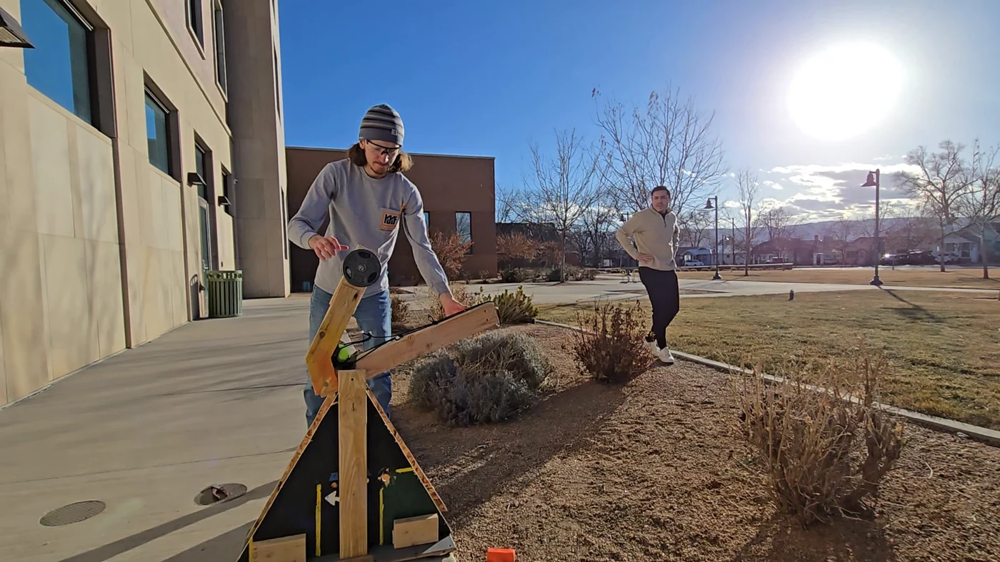
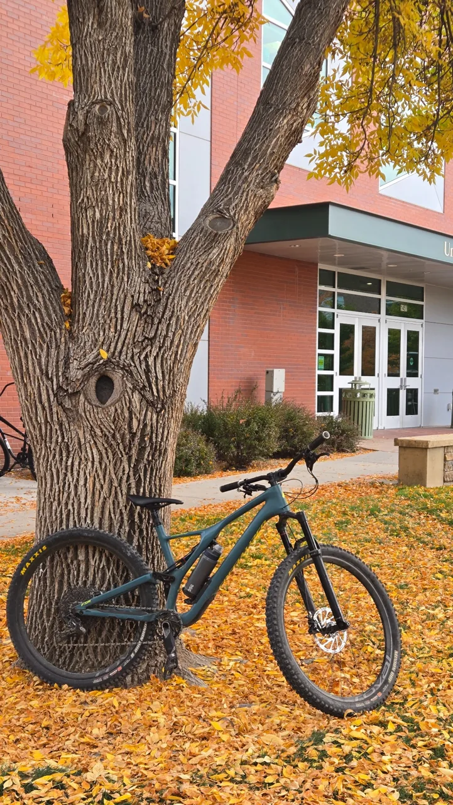
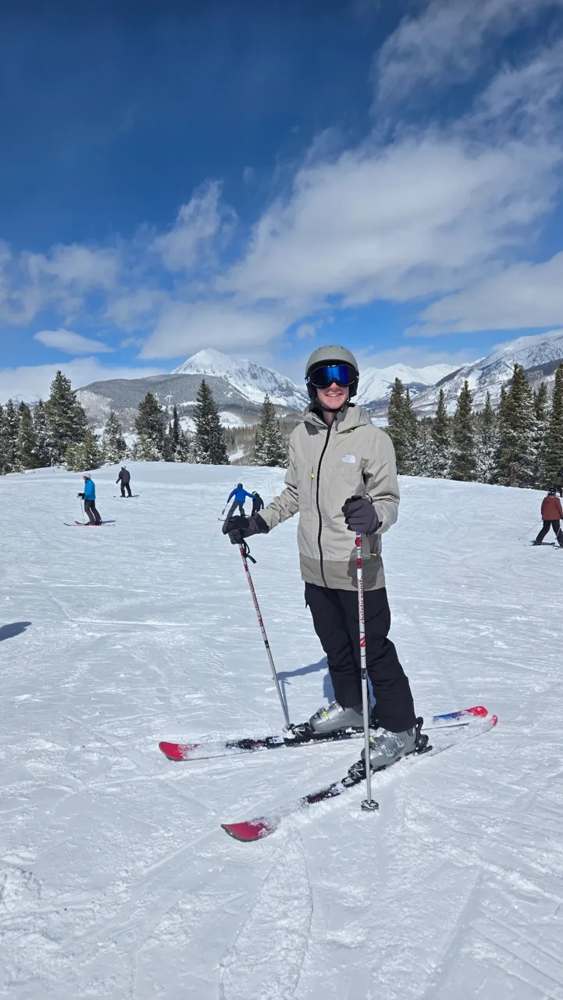

KameronSchad. Mechanical engineering student I design mechanical systems, build prototypes, and use simulation and physical testing to understand how they perform.
B.S. Mechanical Engineering through the CU Boulder / Colorado Mesa University partnership. Interested in mechanical design, aerospace hardware, propulsion, and manufacturing.
Kameron Schad Mechanical Engineering · Class of 2028
Education CU Boulder / CMU B.S. Mechanical Engineering
Academic performance 4.0 GPA Expected graduation May 2028
Engineering focus Design · Analysis · Build SolidWorks, MATLAB, physical testing
Geometry / Analysis / Hardware
Engineering takes shape. A technical drawing comes to life as a shaded model of my original helmet light mount. The animation uses the actual CAD-derived geometry, not a stock illustration.
PART 01 CAD → SOLID INDEPENDENT DESIGN
Explore the design story ↗
ORIGINAL CAD + X / Y / Z Replay animation ↻ Linework to solid 00%
Original CAD preview. Animation loads when visible.
7 projects
01 Rotate the original assembly Rotate rocket assembly
Analysis & testing
Fall 2026 · Year 3 Designed eight interchangeable nose cones and compared CFD with wind-tunnel results, documenting where the methods disagreed.
53–64% lower fitted drag coefficient vs. blunt nose
SolidWorks CFD Wind tunnel Excel
View case study ↗ 
02 CAD → fabricated hardware Assembly CAD
Design & prototyping
Spring 2025 · Year 1 Proposed the manual gantry and led pneumatic claw development through repeated iterations for a working team prototype.
30+ unique parts personally designed
SolidWorks Mechanisms Prototyping
View case study ↗ 03 Rotate the original part Rotate helmet mount
Independent design
2026 · Personal project Designed a removable adapter, investigated a recurring snap-fit failure, and improved durability through print-orientation changes.
45° print orientation change
SolidWorks Static FEA FDM
View case study ↗ 04 Explore the original presentation Showcase overview
Mechanical integration
Spring 2026 · Year 2 Developed most of the mechanical CAD for a four-part client-sponsored prototype, accounting for measured interfaces and assembly constraints.
8 physical components measured for integration
CAD Tolerances Integration
View case study ↗ 05 Inspect the finished workstation Completed workstation
Fabrication & leadership
2024–2026 · Work experience Designed and constructed shop infrastructure, including an 18-foot workstation, and coordinated fabrication of four mobile worktables.
18 ft workstation independently designed and built
Fabrication Woodworking Leadership
View case study ↗ 06 Compare computational results Dynamics simulation
Numerical analysis
Fall 2026 · Year 3 Applied numerical methods to dynamics, stress analysis, experimental data, and signal processing, with explicit result checks.
5 engineering code case studies
MATLAB Numerical methods Data analysis
View case study ↗ 
07 Scrub the original test footage Original testing footage
Early engineering design
February 2025 · Year 1 Proposed a video-inspired design, adapted it to salvaged materials, assisted fabrication and recorded experimental data.
1st place in the class team competition
Design selection Fabrication Testing
View case study ↗ No matching projects.
03 / Experience beyond coursework
Engineering is hands-on. Designed and constructed an 18-foot miter-saw workstation, coordinated fabrication of four mobile worktables, and worked with production crews under time and safety constraints.
04 / About me
Curious about how things work. Mechanical engineering student in the CU Boulder / Colorado Mesa University partnership. I enjoy hands-on design, outdoor photography, mountain biking and skiing. I am interested in mechanical design, aerospace hardware, propulsion and manufacturing.
Education, skills & life outside engineering ↗ 



 01
01